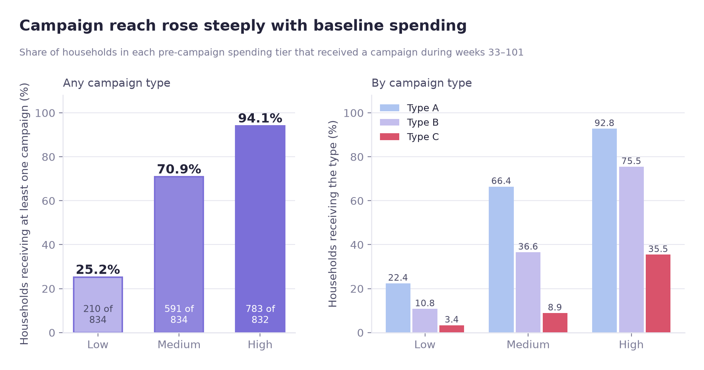
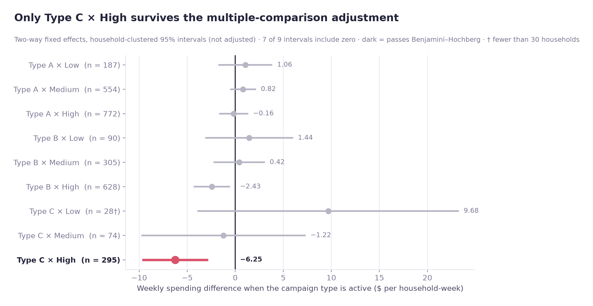
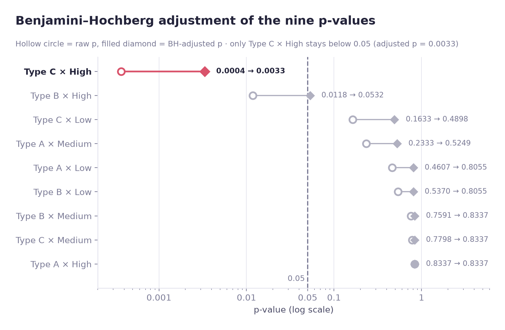
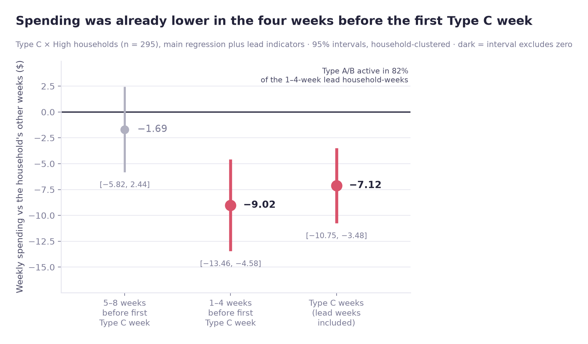

00
Executive summary
Question, method and findings in brief
Campaigns reached 94.1% of high-spending households but only 25.2% of low-spending ones. A comparison that does not hold the household constant combines this difference in who received campaigns with any response to the campaigns.
Pooled comparison and fixed-effects estimates are different quantities
Pooled comparison — any campaign type active vs none, no controls, household-weeks:
| Baseline tier | Quiet weeks (n) | Active weeks (n) | Pooled difference |
|---|---|---|---|
| Low-spending | $11.54 (54,622) | $39.49 (2,924) | +242% |
| Mid-spending | $22.48 (45,887) | $36.08 (11,659) | +60% |
| High-spending | $61.68 (31,960) | $75.61 (25,448) | +23% |
The two tables answer different questions: the first pools every campaign type, the second compares one type against the household's own other weeks, so the second table is not an adjusted version of the first.
Household and week fixed effects — all nine type × tier indicators estimated together in one regression, each read against the same household's own other weeks, with the other campaign types' activity controlled:
| Combination | β ($/week) | Raw p | Households | Reading |
|---|---|---|---|---|
| TypeC × high-spending | −6.25 (≈ −8.6% of $72.75) | 0.0004 | 295 | Survives BH (adjusted p = 0.0033) |
| TypeB × high-spending | −2.43 | 0.0118 | 628 | Does not survive (adjusted p = 0.0532) |
| TypeC × low-spending | +9.68 | 0.1633 | 28 | Not significant |
| TypeA / TypeB × low-spending | +1.06 / +1.44 | 0.4607 / 0.5370 | 187 / 90 | Not significant |
Not shown: TypeA × high-spending (β −0.16, raw p 0.8337) and all three mid-spending types (raw p 0.2333 / 0.7591 / 0.7798), none significant. Campaign reach was 94.1% in the high tier against 25.2% in the low tier.
Key findings
Exactly one of nine tier × type combinations survives correction for multiple comparisons. TypeC × high-spending, β = −6.25, BH-adjusted p = 0.0033, n = 295 households.
The surviving estimate is negative. For the 295 high-spending households that received TypeC, spending in TypeC weeks runs about $6.25 (≈ 8.6% of the high tier's $72.75 pre-campaign weekly mean) below the same households' other weeks, an association rather than an effect.
Clustering the standard errors lowers the F-statistic. The model F-statistic reads 11.544 without clustering and 2.313 with it, so unclustered standard errors would overstate significance.
Spending was already lower just before exposure. For the 295 high-spending households that received TypeC, spending in the four weeks before a household's first TypeC week was $9.02 lower per week than in its other weeks (95% CI −13.46 to −4.58); weeks five to eight showed no detectable difference.
How this is reported
A statistical association, not an established effect
The TypeC × high-spending result survives multiple-comparison correction, and its raw (unadjusted) p-values stay significant in both the first- and repeat-exposure splits (those two tests are not part of the BH set). Whether it reflects a campaign response or a targeting decision could not be separated, and for these 295 households spending was already lower in the four weeks before exposure; it is therefore reported as an association only.
At a glance
01
Overview
What was measured, and why the pooled comparison is not read as an effect
A retailer runs 30 campaigns over roughly 70 weeks (weeks 33–102) and wants to know which customers respond. The simplest analysis compares spending in weeks when a campaign was running against weeks when none was; broken out by customer tier, that pooled comparison gives large differences, especially in the lowest tier.
That comparison cannot be read as campaign lift. Targeting was strongly related to spending. Campaigns reached 94.1% of heavy spenders and 25.2% of light ones, so the comparison between tiers reflects which households received campaigns as well as any behavioural response.
Approach
The analysis makes the observational comparison interpretable by fixing baseline tiers before the first campaign, adding household and week fixed effects, clustering standard errors by household and correcting for multiple comparisons. Even with these steps the causal question stays open, so the results are reported as associations.
Scope
This was a team project. The campaign × tier analysis on this page is my contribution: design, estimation, multiple-comparison correction, and the robustness, non-recipient and lead-effect checks. Other hypotheses were handled by other team members.
Main result: the pooled any-campaign comparison shows higher spending in active weeks in every tier, while the household-level estimates, which answer a different question (one campaign type × tier against the household's own other weeks), show no significantly positive estimate for any campaign type in any tier.
02
Business question
Research question and tier definition
Does campaign response differ by a household's baseline spending tier?
Concretely: when a campaign is running, does a household's weekly spend move — and does that movement depend on whether the household was a light, medium or heavy spender before any campaign began?
Circularity in tier definition circular reasoning
If tiers are defined using data from the campaign period, the analysis contains this chain: campaign runs → spending rises → household classified as high-spending → "high-spending households spent more during campaigns."
That conclusion would follow whether or not campaigns do anything. Tiers were therefore fixed before the first campaign ran and never recomputed.
Tier window
weeks 17–32
First campaign
week 33
Overlap
none
Combinations tested
9
03
Data
Panel construction, baseline tiers and overlapping exposure
Source
Dunnhumby "The Complete Journey" — household transactions plus campaign delivery records. Reshaped into a balanced household × week panel covering weeks 33–101, the period from the first campaign launch onward. Week 102 is left out; the data end on day 711, so that week holds only 6 days of transactions.
The dataset was used for educational portfolio purposes. All analysis, statistical testing, interpretations, and recommendations were independently developed as part of this project.
Baseline tiers — fixed on weeks 17–32, before any campaign
| Tier | Households | Mean weekly spend | Range |
|---|---|---|---|
| Low-spending | 834 | $3.85 | $0.00 – $10.03 |
| Mid-spending | 834 | $20.36 | $10.05 – $33.88 |
| High-spending | 832 | $72.75 | $33.88 – $378.60 |
Three tiers instead of five. Quintiles were not estimated because, for the smallest campaign type, the two lowest quintiles would have held only 16 and 25 households, too few to estimate stably. Cell sizes were checked before the model was estimated.
142 households (5.7%) had no transactions at all in the tier window and were assigned $0, placing them in the low tier — a floor-effect risk tracked through the rest of the analysis.
Overlapping campaign exposure and multicollinearity check passed
Of the 1,008 households receiving more than one campaign type, 86.2% had at least one week in which two or more campaign types were active at the same time, which could cause multicollinearity among the interaction terms.
VIF came back at 1.02–1.12 across all nine interaction dummies. Simultaneously-active rows are only 4.1% of the 172,500-row panel, and the remaining 95.9% dilute the correlation, which helps explain the low values. The overlap was common among multi-type households, and the diagnostic did not indicate a multicollinearity problem.
04
Identification strategy
Four design choices: pre-campaign tiers, household and week fixed effects, clustered standard errors
① Baseline tiers fixed before any campaign ran
Weeks 17–32 only, with the first campaign starting in week 33 — zero overlap. This implements the rule from section 02 that tiers must not be defined from campaign-period data.
② Household fixed effects
Each household is compared against itself in campaign weeks versus quiet weeks. This removes permanent differences between households in average spending ("this household simply spends more"), which is one reason the pooled comparison cannot be read as an effect.
③ Week fixed effects
Christmas, Thanksgiving and other calendar effects hit every household at once. Week fixed effects absorb them so seasonality is not mistaken for campaign response.
④ Household-clustered standard errors
A 69-week repeated-observation panel has serial correlation within households; ordinary standard errors ignore it and understate p-values.
F-statistic — unclustered 11.544 (p < 0.0001) · clustered 2.313 (p = 0.0135)
Effect of clustering. The F-statistic is lower with clustering than without it, so unclustered standard errors would overstate significance.
The model
spend ~ Σ(campaign type × baseline tier) + household fixed effects + week fixed effects clustered SE at household level
05
Analysis
Pooled comparison, fixed-effects model, multiple-comparison correction and exposure-history check
A · The pooled comparison
Within each tier, household-week observations were split by whether any campaign (any of the three types) was active that week, and the two pooled means compared — with no household or week fixed effects applied.
| Tier | Quiet weeks (n) | Active weeks (n) | Pooled difference |
|---|---|---|---|
| Low-spending | $11.54 (54,622) | $39.49 (2,924) | +242% |
| Mid-spending | $22.48 (45,887) | $36.08 (11,659) | +60% |
| High-spending | $61.68 (31,960) | $75.61 (25,448) | +23% |
Read at face value, this would suggest heterogeneous campaign effects, with light spenders gaining several times more than heavy ones. Two features of the data prevent that reading.
The comparison is pooled across households. Even inside one tier, the households receiving campaigns may simply be different households from those that did not, so selection into receiving campaigns remains part of the comparison.
The active-week sample is small in the low tier. Only 2,924 of the low tier's 57,546 household-weeks (5.1%) were campaign-active, against 25,448 of 57,408 (44.3%) in the high tier. Household-level reach (25.2% vs 94.1%) points the same way.

B · Fixed-effects model
With each household compared against itself and calendar effects absorbed, two of the nine combinations have an unadjusted p-value below 0.05, both in the high-spending tier.
| Combination | β | p | Households | Relative size |
|---|---|---|---|---|
| TypeC × high-spending | −6.25 | 0.0004 | 295 | ≈ −8.6% of high-tier baseline ($72.75/week) |
| TypeB × high-spending | −2.43 | 0.0118 | 628 | ≈ −3.3% of high-tier baseline ($72.75/week) |
Relative size = coefficient ÷ the high tier's mean weekly spend in weeks 17–32 ($72.75).
The two comparisons estimate different quantities. The pooled comparison uses any campaign type; the fixed-effects model compares a household's weeks with a given campaign type active against its own other weeks; all nine type × tier indicators are estimated together in one regression, so the other types' activity is controlled. Under fixed effects the high tier shows negative TypeB and TypeC estimates, and none of the three low-tier estimates is distinguishable from zero (smallest raw p = 0.163, TypeC × low, 28 households). Showing what fixed effects change for one group would need a model with a single any-campaign indicator per tier, which was not estimated.
A within-model R² of 0.0004 is low: campaigns explain little of the weekly spending variance within households, although with 172,500 observations a small signal can still be detected. The F-test for poolability (38.138, p < 0.0001) supports accounting for fixed effects.

C · Multiple-comparison correction
Testing nine combinations at once inflates the chance of a false positive, so I applied Benjamini-Hochberg false-discovery-rate control.
| Rank | Combination | raw p | BH threshold | Verdict |
|---|---|---|---|---|
| 1 | TypeC × high-spending | 0.000371 | 0.00556 | survives |
| 2 | TypeB × high-spending | 0.011832 | 0.01111 | fails |
TypeB misses the BH threshold by a small margin. It is treated as an exploratory signal rather than reported as a finding, because it does not pass the correction.

D · Exposure-history check: first versus repeat exposure
With 30 campaigns rolling out over 70 weeks (weeks 33–102; the analysis panel covers weeks 33–101), campaigns switch on and off at different times, so weeks of households already exposed to earlier campaigns can serve as comparison weeks for later ones, a known source of bias in two-way fixed effects designs with staggered timing. This panel is not the textbook staggered-adoption case.
| Exposure history | Households | β | Raw p |
|---|---|---|---|
| First exposure | 295 | −4.89 | 0.009 |
| Repeat exposure | 131 | −9.09 | 0.003 |
These counts are nested, not additive. 295 is every high-tier TypeC recipient; 131 of them received TypeC in more than one separate spell (a spell is a run of consecutive active weeks), and the other 164 in exactly one. The split is applied to week-level observations of the same households, so adding the two would double-count.
Both splits stay significant on raw (unadjusted) p-values; these two tests are not part of the nine-test BH set. The headline result is therefore not driven by repeat-exposure households dominating the estimate. Whether the larger repeat coefficient reflects reinforced discount-waiting or repeated targeting of already-declining households cannot be separated here.
06
Results
Result after correction, non-recipient placebo-style check and lead-effect check
Result after multiple-comparison correction
Of nine campaign-type × spending-tier combinations, one shows a statistically stable association after multiple-comparison correction.
Coefficient
−6.25
vs high-tier baseline
≈ −8.6%
BH-adjusted p
0.0033
Households
295
Causal interpretation
The estimate is not interpreted as causal. For the 295 high-spending households that received Type C, spending was already lower before the first Type C week, and the data do not show why.
A placebo-style check was run on the 916 households that received no campaigns at all. I compared early and later spending among those households, in a regression measured against the low tier. It is not a test of the Type C estimate.
| Term (among 916 non-recipients) | β | p | 95% CI | Households in tier |
|---|---|---|---|---|
| Medium × later period | 0.05 | 0.951 | (−1.60, +1.70) | 243 |
| High × later period | −4.74 | 0.261 | (−13.00, +3.52) | 49 |
These coefficients are measured against the low tier, and week fixed effects absorb the change common to everyone (later period = weeks 67–101 versus the earlier weeks). Low-spending non-recipients rose by 165.5% between weeks 33–42 and 92–101, a different window from the regression's, while high-spending non-recipients changed by −1.0% over those same weeks, so much of the High × later period coefficient can come from low-tier growth rather than a high-tier decline. It is not the same quantity as the Type C estimate, which compares a household's Type C weeks with its own other weeks, so the two numbers are not compared.
Lead-effect check
For the 295 high-spending households that received Type C, I added two indicators to the main model: Lead4 (the four weeks before a household's first Type C week) and Lead8 (weeks five to eight before it). Estimation uses household and week fixed effects, household-clustered standard errors and the same nine campaign-by-tier indicators, so Type A and B activity is controlled as in the main model. The reading rule was fixed before running: an interval that includes zero means no evidence of a pre-existing decline; a negative coefficient whose interval excludes zero means reverse targeting is possible.
| Term | β | Clustered SE | 95% CI | p | Households | Reading |
|---|---|---|---|---|---|---|
| Lead4 (weeks −4 to −1) | −9.02 | 2.26 | [−13.46, −4.58] | < 0.0001 | 295 | Reverse targeting is possible |
| Lead8 (weeks −8 to −5) | −1.69 | 2.11 | [−5.82, 2.44] | 0.42 | 286 | No evidence of a pre-existing decline |
| TypeC × high-spending, leads included | −7.12 | 1.86 | [−10.75, −3.48] | 0.0001 | 295 | Reference (main model: −6.25) |
The two lead coefficients together differ from zero (joint Wald test p = 0.0003). For 260 of the 295 households, at least one Lead4 week had a Type A or B campaign active; across all 1,162 Lead4 household-weeks it was 82%. So a dip before Type C cannot be separated from anticipation or from the effect of those campaigns. For 9 households the lead windows begin before week 33, outside the panel. Two tests were run, with no multiple-comparison adjustment.

Explanations the data cannot separate
| # | Explanation |
|---|---|
| 1 | TypeC campaigns lead customers to postpone purchases or wait for discounts, lowering spend |
| 2 | The retailer sent TypeC to heavy spenders whose spending had already dipped, so the campaign would be a response to the dip rather than its cause (lead-effect: −9.02 in the four weeks before, no difference in weeks five to eight) |
| 3 | Anticipation, or the Type A and B campaigns active in 82% of the household-weeks in the four weeks before the first TypeC week, lowered spending before TypeC itself began |
Nothing in the data records how campaign recipients were selected, so the reason a given household received a given campaign at a given time cannot be determined from the data. Explanation 2 therefore stays open.
Reported as
Association, not an established effect
Survives multiple-comparison correction, and the raw (unadjusted) p-values hold in both first and repeat exposure (those two tests are not part of the BH set). However, among these 295 households spending was already lower in the four weeks before exposure, so it is not established as causal and is reported as an association.
07
Business insights
Implications for campaign evaluation and targeting
① A pooled comparison does not measure campaign lift here
On this data a pooled active/quiet comparison shows higher spending in active weeks in every tier, largest for light spenders (+242%, +60%, +23%). The household-level estimates answer a different question (one campaign type × tier against the household's own other weeks, not the pooled any-campaign average) and show no significant gain for any campaign type in the low and mid tiers and a negative Type C association in the high tier. A campaign evaluation built on the pooled comparison could misdirect budget.
② Targeting was strongly skewed toward high spenders, which limits measurement
94.1% reach in the high tier against 25.2% in the low tier means the data say little about whether light spenders respond: 25.2% of low-tier households received any campaign, and only 28 received Type C. Deliberately holding out a random slice of each tier would make the next campaign measurable.
③ TypeC among heavy spenders warrants further investigation
The one surviving signal is negative. If it is a genuine response, Type C may be encouraging customers to wait for discounts. If it is targeting, Type C is being sent to customers whose spending has just dipped (−9.02 in the four weeks before), and the dip is attributed to the campaign. The lead-effect result fits this, but also fits anticipation and Type A/B campaigns. Both readings warrant investigation; neither is established.
Recommendations
01 Hold out a randomised control slice on the next campaign
- Who
- Campaign operations and marketing analytics
- What
- Withhold a random sample within each spending tier from the next campaign send, sized to give usable power in the low tier specifically
- Why
- Much of the ambiguity in this analysis traces to two gaps — no record of how recipients were chosen, and only 49 untreated households in the tier where the result sits. A holdout addresses both in one step
- How to verify
- Compare held-out against treated households within tier; with randomised assignment this can be read as an effect estimate rather than an association
02 Do not report campaign lift from active-vs-quiet comparisons
- Who
- Marketing reporting
- What
- Replace pooled active/quiet comparisons with within-household comparison as the default reporting method, and publish reach rate alongside any tier breakdown
- Why
- The +242% figure is what a pooled active-versus-quiet comparison produces for the low tier on this data (2,924 active vs 54,622 quiet household-weeks). The fixed-effects estimates are a different quantity, not an adjustment of that figure: each compares one campaign type with the household's own other weeks, and none of the three low-tier campaign-type estimates is distinguishable from zero (smallest raw p = 0.163)
03 Log the targeting rule
- Who
- Campaign operations
- What
- Record the selection criteria and the timing trigger for each campaign send, stored alongside delivery records
- Why
- The lead-effect test found spending already lower in the four weeks before the first Type C week; without the targeting rule that cannot be separated from reverse targeting, anticipation, or the Type A and B campaigns active at the time. It is one of the main missing fields behind the decision not to make a causal claim
08
Limitations
Why the results are reported as associations
Parallel trends are not cleanly satisfied
A pre-campaign test on weeks 17–32, checking whether future recipients and non-recipients were already diverging. It is a regression on 32 aggregate points (average weekly spend per household for each of the two groups in each of 16 weeks), and the coefficient is the future-recipient × week interaction, the difference in weekly slope, in dollars per household per week, per week:
| Sample | Interaction coef. ($ per household per week, per week) | p | Verdict |
|---|---|---|---|
| Full sample | 0.296 | 0.087 | Not significant at 5%, borderline at 10% |
| Low tier | 0.025 | 0.764 | no difference detected |
| Mid tier | 0.308 | 0.053 | borderline |
| High tier | 0.333 | 0.613 | not significant, only 49 controls |
Only the low tier shows no detected difference with a sizeable comparison group (624 households). The high tier, where the Type C result is, has too few comparison households for a non-significant result to be informative.
Small samples recur
Low tier × TypeC has 28 households; the high-spending non-recipient comparison group has 49.
The targeting rule is unknown
Nothing records how recipients were selected, so the reverse-targeting explanation cannot be excluded. The lead-effect test found a dip in the four weeks before exposure (Lead4 −9.02), which is consistent with it.
Staggered adoption
30 campaigns rolling out over time means already-treated households can act as controls for later ones, a known source of bias in TWFE designs. The first-versus-repeat split is a descriptive check, not a correction for it.
Observational data
Household and week fixed effects, the pre-trend check and the lead-effect test reduce some risks. They do not substitute for randomised assignment.
09
Tools & Skills
What was used, and for what
Programming & data handling
Causal inference & panel methods
Statistics
Practices
10
Repository
Notebook, code, and full write-up
Code & outputs on GitHub →The repository contains the Jupyter notebooks, result CSVs and figure code, reproducible from the raw dataset (kept out of the repo), along with the full README write-up covering the eight numbered analysis steps compressed on this page.
Related case study
Case 01 asks a different question of the same dataset — whether revenue growth is concentrated in high-value households, and who actually drove it. Read Case 01 →